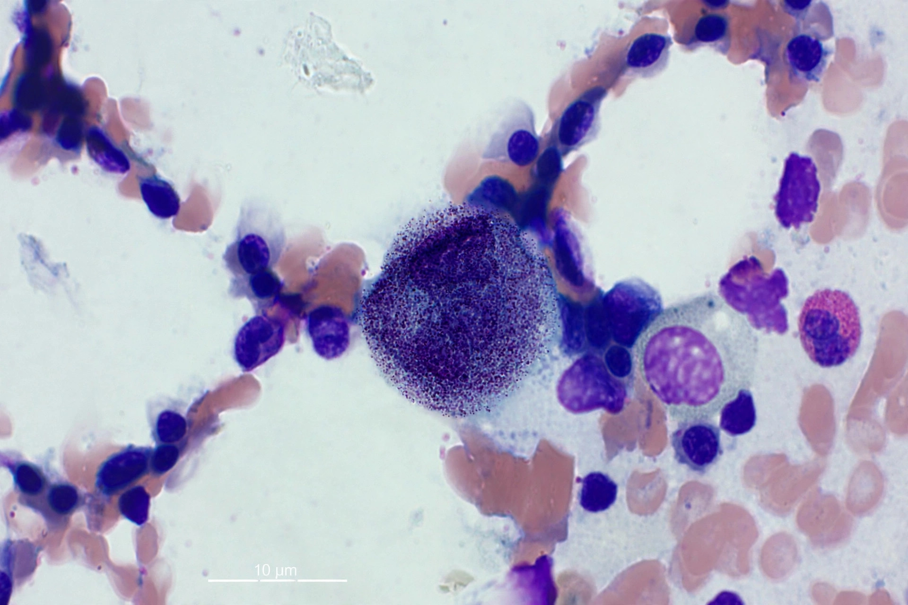

A mast cell (also mastocyte or labrocyte) is a resident immune cell of the myeloid lineage, found in connective tissues — particularly in the skin, near blood vessels, in the linings of the gut and airways, and around nerves. Mast cells are packed with granules rich in histamine, heparin, proteases and cytokines, and are best known as key effectors of allergic and anaphylactic reactions.
Mast cells were first described in 1878 by Paul Ehrlich, who named them Mastzellen ("well-fed cells") because their granule-packed cytoplasm gave them the appearance of well-nourished cells. They derive from CD34+ haematopoietic progenitors in the bone marrow, circulate as immature precursors, and mature within tissues.
When immunoglobulin E (IgE) bound to mast cell surface receptors is cross-linked by allergen, the cell degranulates, releasing histamine and other mediators that cause vasodilation, increased vascular permeability, smooth muscle contraction and mucus secretion — the classic symptoms of allergy. Beyond allergy, mast cells contribute to innate defence against pathogens and parasites, wound healing, tissue remodelling, angiogenesis and even regulation of blood–brain barrier permeability. Their role in these homeostatic functions was appreciated only in the late 20th century.
Excessive or inappropriate mast cell activation underlies allergic rhinitis, asthma, urticaria and anaphylaxis. Mastocytosis is a group of disorders involving abnormal accumulation of mast cells; its systemic form can cause flushing, gastrointestinal symptoms and cardiovascular instability. Drugs such as cromoglicate (cromolyn) act as mast cell stabilisers, inhibiting degranulation.